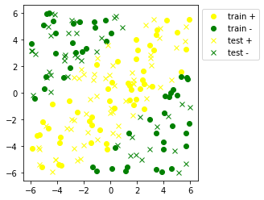

Let’s move to a slightly more realistic example. Here we focus on the task of (binary) classification. As always, we first load the data that we want to classify:
from utilities import load_data, plot_boundaries, plot_data # we wrote some helper functionsX_train, y_train, X_test, y_test = load_data() # to help with data loading
You can plot the data using the helper function plot_data:
plot_data(X_train, y_train, X_test, y_test)

As you can see, this data is not linearly separable. In other words, the positive and negative examples cannot be separated using a linear classifier. Our goal for the rest of this notebook-session is to learn the parameters of a neural-network model which can separate the positives from the negative examples.
What do we mean by learning the parameters? Remember that our neural network has 9 parameters including three biases (\(w_1, \ldots, w_6, b_1, b_2, b_3\)). Every different assignment of values to these parameters leads to a different classifier. We want to find the one which matches our data the best.
Let’s see how different choices of parameters changes the classifier. For a given set of parameters, the function plot_boundaries shows the regions of positive prediction (coloured blue) and negative prediction (coloured red):
It appears that the classifier obtained using the above set of parameters does not match our data. (Of course, this is to be expected. This classifier with fixed weights a priori has a high bias and a low variance.)
Question 2
Try the alternatives below and see which one is a better match for our data:
Obviously, we need a better way than trial and error to find the best parameters. The way that we do this is by minimizing a loss function.
Loss function
A loss function evaluates how much the predictions of our classifier are different from the actual labels. The loss function that we will use for our network is the binary cross-entropy loss. Let’s represent our training data by the set \(\{(X_1, y_1), \ldots, (X_n , y_n)\}\) and our neural network function by \(f\). Then the binary cross-entropy loss function will be defined as:
The binary cross-entropy relates to the Bernoulli distribution (maximizing the Bernoulli likelihood is equivalent to minimizing the binary cross-entropy). It is the loss function that should be used for binary classification problems. It can be generalized to multiclass classification problems, see cross entropy.
Question 3
Let’s see what this loss function means using a tiny example. Assume that our training data consists of only four examples, and the values of \(X, f(X), y\) of those four examples are as follows:
X
f(X)
y
(5.4, 1.6)
1
1
(1.4, -0.5)
0.3679
1
(3.5, -3)
0.8647
0
(-3.5, 1.1)
0
0
Calculate the loss function using the equation above. You can calculate the log using this function:
np.log(0.5)
-0.6931471805599453
It is important to remember that the loss function \(l\) is a function of network parameters, since it is defined in terms of the network output. We can write the loss function as:
In principle, we want to find the set of parameters \(\mathbf{w}, \mathbf{b}\) for which \(\ell(\mathbf{w}, \mathbf{b})\) has the smallest value. We will use gradient descent to find these values.
Minimization by gradient descent
The plot below shows the function \(f(x_1, x_2) = x_1^2 + x_2^2\):
Question 4
Point A on the plot has coordinates \((1, 1, 3)\). The blue vector AB shows the direction \((-1, -1)\), and the green vector AC shows the direction \((0, -1)\). Assume that we are at initial point \((1, 1)\) and we want to move in a direction that minimizes the function \(f\). Which of these two directions moves faster towards the minimum: \((-1, -1)\) or \((0, -1)\)?
Question 5
Calculate the gradient of function \(f\) in the point \((1, 1)\). How is this gradient related to the fastest path to the minimum (i.e. the steepest descent)?
Training the neural network
We now understand the theory of training neural networks. But how do we do this in practice? We will now develop our practical skills using the scikit-learn library to train our tiny network. Let’s first define the network:
The argument hidden_layer_sizes=(2,) states that we only have one hidden layer with two neurons, and the argument activation='logistic' shows that we use the sigmoid activation function (Let’s ignore the other arguments for now).
We will now train the network using our training data:
Once the network is trained, use the helper function tiny_net_parameters to get the parameters of the trained network (tiny_net_parameters is a wrapper around clf.coefs_ and clf.intercepts_):
The learned classifier does a good job at predicting labels both for the training examples and unseen examples (test data).
In addition to the decision boundaries in the original data space, we can also visualize how the data are transformed through the neural networks. Since we use a hidden layer with two neurons, we can visualize its “output” in two dimensions.
En plus des frontières de décisions dans l’espace original des données, nous pouvons aussi visualiser comment les données sont transformées à travers le réseau de neurones. Nous utilisons le fait que la couche cachée utilise deux neurones et donc nous pouvons visualiser sa sortie en deux dimensions.
(for better visibility, we changed the color of the yellow class to blue.)
We will now investigate a few properties of neural networks using tensorflow playground. Take a few minutes to familiarize yourself with the playground:
Change the number of hidden layers to one
Change the data distribution to exclusive OR
Push the run button and see how the network is trained
Stop training after epoch 500 (each epoch involves doing gradient descent using the complete dataset)
Hover over the neurons in the hidden layer and see the vizualization of their outputs.
Push the run button and see the learning process for 500 epochs. What do you observe?
Stop training and press the restart button. Change the learning rate from 3 to 0.1, and press the run button again. What is different from the previous run?
Try these steps using three learning rates: 0.3, 0.03, and 0.003:
Press the reset button
Change the learning rate
Press the step button (located at the right of run button) a few times, and observe how the training/test loss changes in each step.
Let’s first observe a few things about this example. Check the box titled Show test data. Uncheck the box again. As you can see, the data is noisy and the number of training examples is small. This is a situation prone to overfitting. - Press the run button and let the training proceed for 500 epochs, then pause the training. - What do you think about the decision boundary of the classifier? - What causes the difference between the training error and test error? (Check the Show test data box again) - Write down the test error
We will now see how we can avoid overfitting using \(L_2\) regularization. - Press the restart button - Change regularization from None to L2 - Change Regularization rate from 0 to 0.3 - Press the run button and run the model for 500 epochs - What is different from the previous setting? - Write down the test error
Just like learning rate, different regularization rates will affect the classifier performance. Try these steps with regularization rates 0.03 and 0.003: - Press the restart button - Change Regularization rate - Press the run button and run the model for 500 epochs - Write down the test error
Which of these regularization rates would you use?